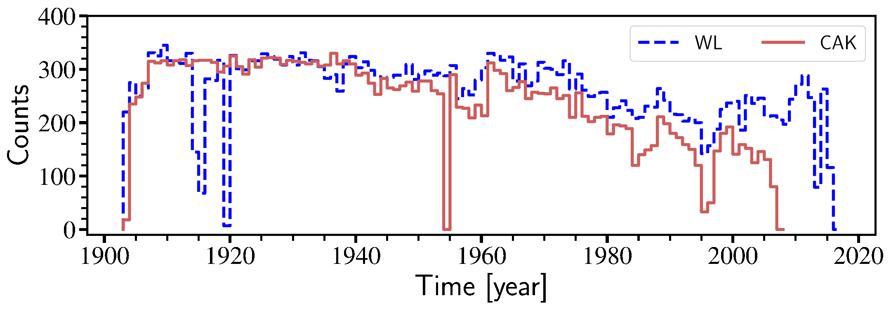
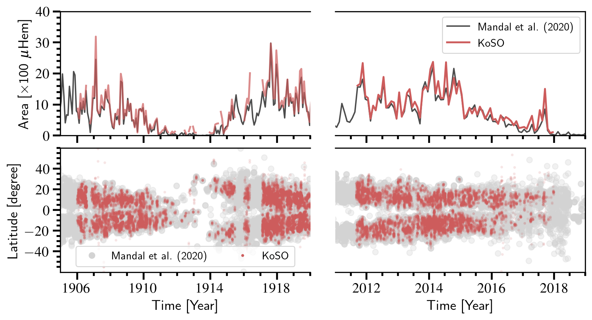
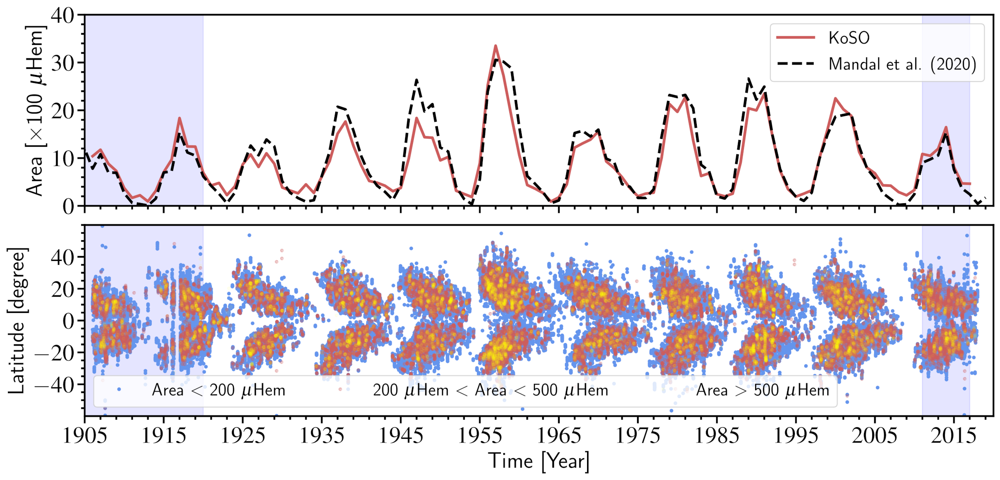
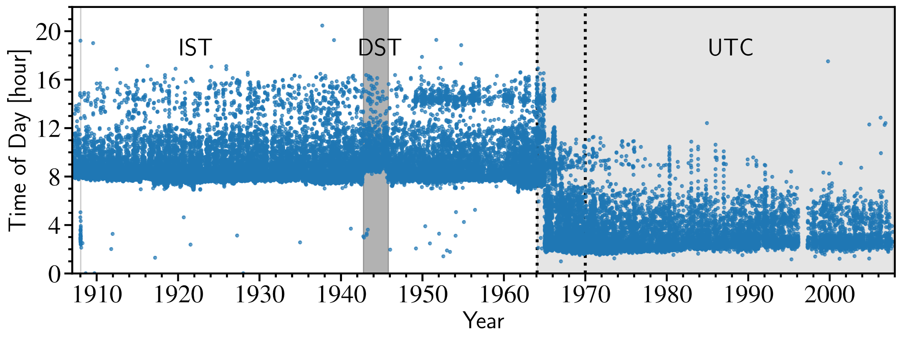
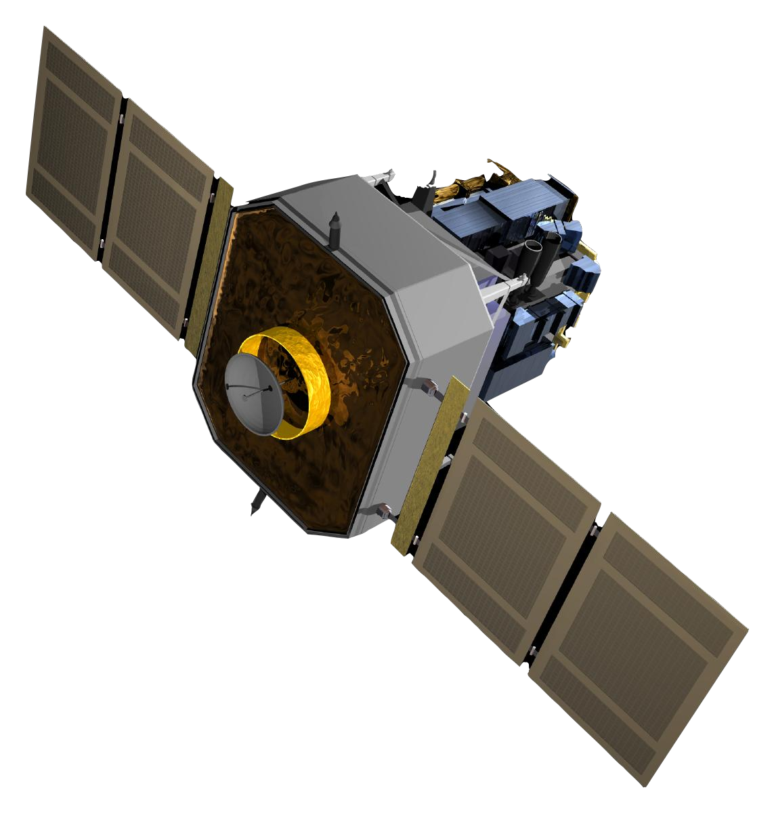
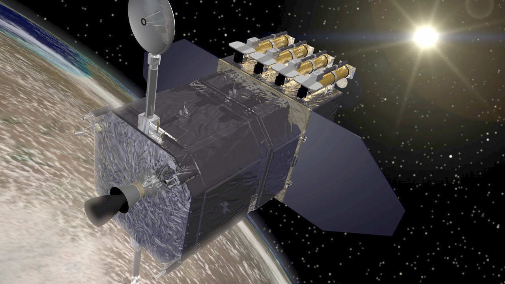

2 Data
“The goal is to turn data into information, and information into insight.”
–Carly Fiorina
The importance of historical archival data is immeasurable for the long–term study of the Sun. The significance of these data was not out of the site, and hence observatories around the globe started preserving them. Most of these data were taken on photographic plates or films, which are now either digitized or in the process of digitization. Among all the observatories, the Royal Observatory of Greenwich has one of the most extended data series from 1874 to 1976, collected and compiled from its different observing stations. Apart from RGO, Kodaikanal Solar Observatory, Kodaikanal (1906 onward), Debrecen Photographic Data (1974–2018), Pulkovo (1932–1991) etc., have systematic sunspot observation.
2.1 The KoSO Digital Archive
Kodaikanal Solar Observatory (KoSO), established in 1899, is one of the oldest observatories in the world observing the Sun in multi-wavelengths (white-light, H-alpha, Ca-K) from the beginning of the 20th century (Hasan et al. 2010). Earlier, these observations were taken on photographic plates or films and preserved in the humidity controlled environment at Kodaikanal. Recently these data have been digitized using a digitizer unit and made public for the scientific community1. The statistics of the digitized data is shown in 1.2. First, I will briefly discuss the telescope used to acquire these observations and the digitizer unit used to make it digital before I get into the details the data products.

2.1.1 The Telescope
The white light observation at Kodaikanal has been performed using an equatorially mounted 10 cm, f/15 telescope from the begging of 1904. With the help of additional optics, this telescope produces a solar image of a diameter of 20.4 cm, which is acquired on a photographic plate or film. In 1918 this 10 cm lens was replaced by a 15 cm achromatic lens, and then onward, the same setup is used for the observation (Sivaraman, Gupta, and Howard 1993).
The Ca-K (393.37 nm) and H-alpha (656.28 nm) observations were taken using a spectroheliograph. To fed the reflected sunlight to the spectrograph, an 18 inches single mirror siderostat is used along with the additional optics. The siderostat also take care of the Earth’s rotation and reflect the sunlight in a fixed direction which is fed to the spectroheliograph. In the spectrograph a two prisms/mirrors along with CA-K/H-alpha filter are used to observe the Sun in these two wavelengths.
2.1.2 The Digitizer Unit
The digitizer unit available at KoSO is used to digitize the observation taken on plates/films into 4k\(\times\)4k resolution. This unit consists a 1 m diameter spherical uniform light source with a small opening at the top where plates/films are placed in a holder for digitization. Light coming from the sphere passes through the plate/film and is captured by a cryogenic cooled (-100\(^\circ\) C) CCD camera to reduce the dark noise. This camera takes the image with resolution of 4k\(\times\)4k and with a bit depth of 32-bit and stores it in Flexible Image Transport System (FITS) format for the use of scientific community (for further details about the digitization see Ravindra et al. 2013). This digitizer unit has been extensively used for digitizing all the photographic plates and films.
2.2 White-light Data
The white–light photographic data for the period 1906–2011 has been digitized recently using the digitizer discussed in . Barring the period 1906–1920, the white–light data for 1921–2011 has been calibrated and reported in Ravindra et al. (2013). These calibration steps include (i) correction for flat field, (ii) disk identification using Hough transform, (iii) conversion of intensity to relative plate density and (iv) addition of proper header information as per FITS standard. After that, a semi–automated sunspot detection technique was developed based on the already existing sunspot detection algorithm such as STARA (Watson et al. 2009) to identify the sunspots from these images and these informations are stored in the form of binary images. The sunspots area time series extracted from these data have been reported in Ravindra et al. (2013) and S. Mandal et al. (2017). The stored binary mask keeping the information about sunspots are used in [Chap3] (Jha, Mandal, and Banerjee 2018, 2019) and [Chap4](Jha et al. 2021) and could be further used for subsequent studies.
2.2.1 Updated Sunspots Area Time Series
The white-light observation at KoSO started in 1904, but due to difficulties in calibration for the period 1904, the sunspot area series has been only reported for the period 1921 (Ravindra et al. 2013; S. Mandal et al. 2017). The initial two years of data (1904 and 1905) have difficulty identifying reference lines that could be used to get the correct orientation of the images, as they do not contain any. Therefore, barring the initial two years here, I will briefly discuss the updated area series, which includes the data for the period 1906 and extends the series till 2018. The detail report on the update is under preparation and will be presented in Jha et al. (2022, in preparation).

It has been already pointed out by Ravindra et al. (2013) that the configuration of the telescope has been changed several times before 1918. These changes result in the varying image quality and disk size on the photographic plates of films. Along with the East-West line, which is used to orient the images correctly, these observations contain an additional North-South line. Due to the presence of two lines, it is not clear which of these lines correspond to North-South and East-West, and hence, the older version of codes was unable to deal with these observations. Now, a semi-automated method is used use manually verify the orientation of the images based on the movement of features on the surface. The steps of calibration and sunspot detection is the same as discussed and also reported in Ravindra et al. (2013). Furthermore, here I also present the extended area series from the recent period 2011, which are also extracted in the similar way as discussed in Ravindra et al. (2013) and S. Mandal et al. (2017).
After the detection of sunspots the position of these spots are extracted. Top panel of 1.3 shows the monthly averaged sunspot area for the two different periods (1906 & 2011). The comparison of these monthly averaged area show a good agreement with the recently cros-calibrated area series (Sudip Mandal et al. 2020). The bottom panel of 1.3 also show the comparison of the position of the detected spots which also in accordance with Sudip Mandal et al. (2020). 1.4 shows the (top) updated area series from the KoSO along with the cross-calibrated yearly averaged area from Sudip Mandal et al. (2020), and (bottom) location of sunspots on the surface in form of latitude time diagram.

2.3 Ca-K Data
The Ca-K observation captures the chromosphere and carries an important information about the magnetic nature of the Sun. Ca-K data is used as an important proxy for the magnetic field measurement. Moreover, this data also plays a crucial role in the historical reconstruction of solar irradiance. Therefore, analogous to white light, the Ca-K data has also been digitized for the period 1904–2007 and calibrated by following the similar steps as mentioned in . These data have been taken with the help of siderostat, a single mirror system, and suffers from rotation of the field of view (FOV). It is important to correctly locate the solar north in the image for the scientific use of the data. Therefore, after the observations, the position of solar North/South has been marked by double/single dot based on the tabulated value of rotation calculated from observation time (Priyal et al. 2014). It has been recently discovered that there are a few issues with this marking, and it will be addressed in the next section.
2.3.1 Pole Angle Calculation
As mentioned already the siderostat cause the rotation of FOV and hence the position of solar north rotates 360\(^\circ\) in one complete day. Now, instead of tabulated value I suggest to use the mathematical formula to calculate the rotation caused by siderostat (\(\Theta\)), which is given by \[\begin{equation} \Theta = 2\tan^{-1}{\left[ K\tan{\left( \frac{{\rm HA}}{2}\right)}\right]}; \label{eq2.1} \end{equation}\] where, \[\begin{equation*} K \equiv \frac{\sin{\left( \frac{L-\delta}{2}\right)}}{\sin{\left( \frac{L+\delta}{2}\right)}}, \end{equation*}\]
HA is the hour angle2 of the Sun at the time of observation, \(L\) (10.23\(^\circ\)N for KoSO) is the latitude of the observatory and, \(\delta\) (\(=90^o - {\rm declination~of~Sun}\)) is the pole angle of the Sun (Cornu 1900). The mathematical relation given in [eq2.1] depends on HA, which need a correct time of observation ().
2.3.2 Issues with Timestamps
The are usually written on plates/films, envelops containing the plate and in the logbook. During the digitization of these observations, the file name3 is given as par the . To use the digitized images and get the correct position of solar North, we need this time from the filenames and here come the problems. There are a few issues with the timestamp in the filename, which are following.
A major change in time zone from IST (+05:30 GMT) to UTC (00:00 GMT) in February 1964 (see 1.5) is noticed and it can straightly corrected.
During Sep 1, 1942 to Oct 15, 1945 there is a systematic shift of a hour daylight saving time4 (DST; +06:30 UTC) observed in India. It is also very easy to be taken care once known.
A careful look at the in Jan 1908 (for a small period) suggests that the is in UTC, which is again easy to compensate.
Scatters from 1964 to 1970 is mainly due to mixing time zones (IST and UTC) during digitization and renaming the files even though the on plates are in UTC. Because of its randomness it is little tricky to correct.
Scatters seen beyond the usual observation time (06:30 to 17:00 IST) is primarily due to the mistake in the name of files during digitization.
The points raised in 1, 2 and 3 are straight forward to bring to either IST or GMT, whatever one may prefer. The scatter and the mistakes in renaming the file are really difficult to correct because of its random nature. It was unknown that how much data is effected by such mistakes and it becomes important to first identify that fraction of data and then try to correct them if possible.

2.3.3 Identification and Correction
To identify the in-correct timestamp in the filenames (observations) these steps have been followed.
Three consecutive observations (images) have been selected and rotated based on the as extracted from filename and using [eq2.1].
The preceding/following observations are differentially forward/back rotated to match with the of central observation.
Using a fixed threshold, the contours (represents the chromospheric feature) of differentially forward/back rotated preceding/following observation are overlapped and compared manually with central observation.
If either of the contours shows correct overlap, the central observation is marked as correct timestamp or and if non of them are overlapping it is marked as in-correct.
Observation marked in-correct are again compared with the two correctly marked near-time observations and marked again as Step-4.
I have gone through all the observations, and based on the method briefed above, the summary is presented in 1.1
| Number of Observations | Number | |
|---|---|---|
| Total (1907) | : | 47935 |
| Correct timestamp (IST) | : | 31911 (66.6%) |
| Correct timestamp (UTC) | : | 11654 (24.3%) |
| In-Correct timestamp | : | 04370 (09.1%) |
To correct all those observations identified as in-correct timestamps, we check the plates and logbooks for the . After noting down for all the observations, I again check for their correctness using a similar approach explained earlier. Hence, the final statistics for the observation with correct and in-correct is as in 1.2. Apart from these, there are around 720 observations during the period 1904, in which no information is available, and I am currently exploring the possiblity to get the in those observations. This complete work will be submitted soon to the Journal of Solar Physics as Jha et al. (2022).
| Number of Observations | Number | |
|---|---|---|
| Total (1907) | : | 47935 |
| Correct | : | 44977 (93.8%) |
| In-Correct | : | 01607 (03.4%) |
| Bad Quality (visually) Images | : | 01150 (02.4%) |
| Unknown | : | 00207 (00.4%) |
2.4 The Michelson Doppler Imager
The Michelson Doppler Imager [MDI; Scherrer et al. (1995)] is a space-based instrument onboard Solar and Heliospheric Observatory (SOHO, shown in 1.6) launched in December 1995, which is a project of international collaboration between The National Aeronautics and Space Administration (NASA) and European Space Agency (ESA). MDI observes the Sun in visible light (6768 Å; white-light or intensity continuum) with a cadence of 6 hr and resolution of 4” on 1k\(\times\)1k CCD. This provides the photospheric observation of the Sun, which is helpful for the study of sunspots and other photospheric activity. MDI also measures the line of sight (LOS) magnetic field component using Zeeman splitting of magnetically sensitive Ni I 6768 Åline. These LOS magnetograms are available with the cadence of 96 m and have the exact resolution as white-light. In this thesis work, the intensity continuum and magnetogram data have been used for 1996.

2.5 The Helioseismic and Magnetic Imager
The Helioseismic and Magnetic Imager [HMI; Schou et al. (2012)] onboard Solar Dynamic Observatory (SDO) is a succesor of MDI with better resolution and cadence. It has two 4k\(\times\)4k CCD cameras which observe the Sun with 45 sec and 720 sec cadence. HMI provides the full disk LOS and vector magnetic filed measurementsa and it also provides the full disk intensity continuum with the resolution of 1”. In this thesis the intensity continum and magnetogram data for the period 2010 has been used.
